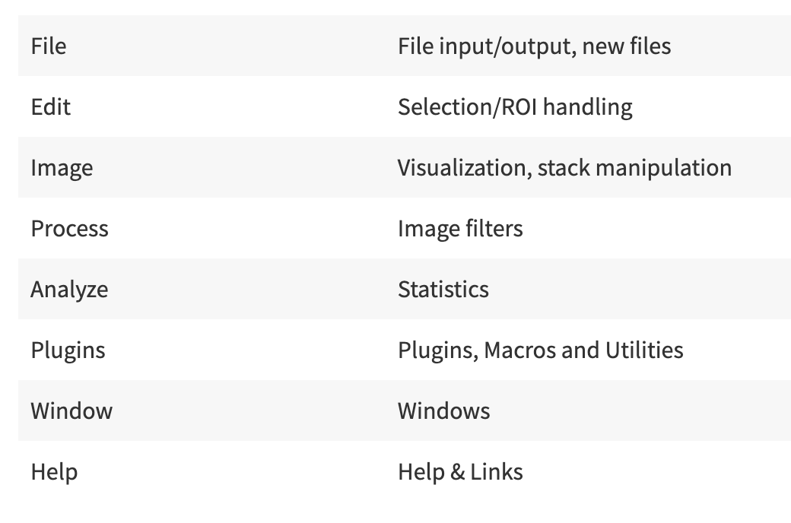
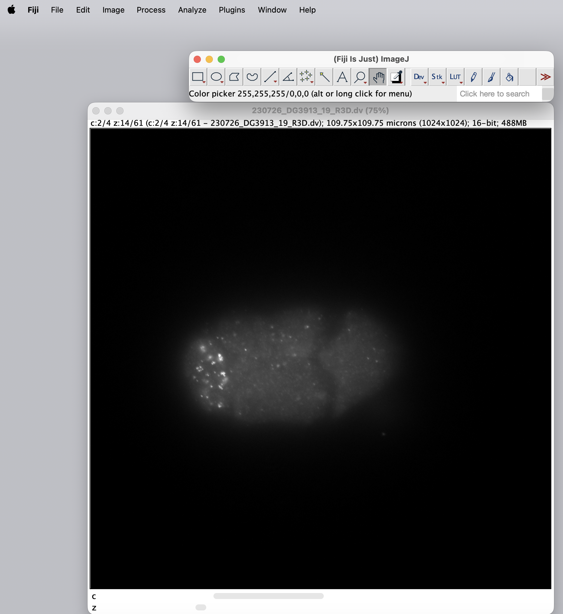
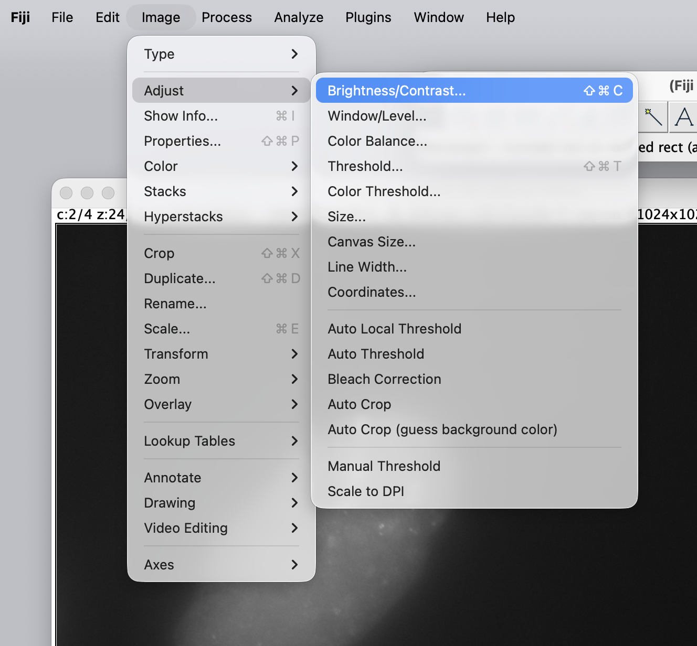
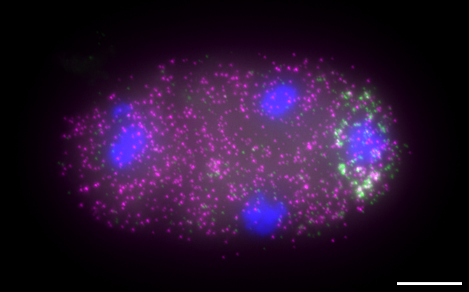

Intro to FIJI#
References and Resources#
image.sc Forum - this is a user-friendly help forum.

What is FIJI?#
FIJI (FIJI is Just Image J) is a version of the open source software ImageJ (and ImageJ2) that is distributed complete with a collection of user-generated Plugins.
Additional Plugins can be created by the community and installed as needed.
Brief Overview of FIJI#
Quick FIJI tutorial - follow along#
Open FIJI
Explore the menus
{kind=link}

Explore the toolbar. It contains tools, status, and search

Let’s open a file#
In your finder or explorer, locate the following file:
~/260610_quantify_smFISH/01_raw_images/Spike_Fig6/230726_DG3913_19_R3D.dvThis strain has full-length lin-41 3’UTR
Drag and drop the file into the status bar to open
Click
OK
{kind=link}

C - toggles between the channels
C1 - Channel 1 - smFISH - Cy-5 - set-3 mRNA - a homogenous control
C2 - Channel 2 - smFISH - mCherry - lin-41 mRNA - our querry mRNA
C3 - Channel 3 - GFP - FITC - LIN-41::GFP (repressed at this stage)
C4 - Channel 4 - DNA - DAPI
Z - toggles between the Z-stacks
Slide the C and Z sliders to explore the image
Let’s adjust the brightness#
Note
Adjusting the brightness will not alter the underlying information within your file. It will change the way the image is displayed on your screen.
Adjust brightness by selecting from Menu Bar
Image -> Adjust -> Brigthness/Constrast
{kind=link}

Set your Z to a middle section
Set your C to channel 1
Slide
MaximumandMinimumsliders to explore how these alter the imageSlide
BrightnessandContrastto explore how these alter the image
Note
This will only change the brightness of the selected channel. Each channel will need to be adjusted individually
Tip
Auto - Automatically adjusts the max/min to 0.35 brightness levels. If you open a file that is totally black, press Auto to start
Set - Synchronizes the brightness and contrast among multiple open images with the “Propatage to all other # channel images” option
Optional Content#
Watch this brief demonstration of some basic FIJI capabilities
Image -> Stacks -> Z Projectto flatten Z-dimensionsImage -> Transform -> Rotate ...to rotate an imageImage -> Color -> Split Channelsto split the channels into individual filesImage -> Color -> Merge Channelsto merge channels and assign colorsUsing the toolbar, select
Rectangleand draw a rectangle around your image to select a part of itImage -> Cropto crop your imageAnalyze -> Set Scaleto set the scale of your pixels per micronsAnalyze -> Tools -> Scale Bar ...to add a 10 micron scale bar. Make sure to click “Hide text”File -> Save As -> Tiff...to save
Final product:
{kind=link}
